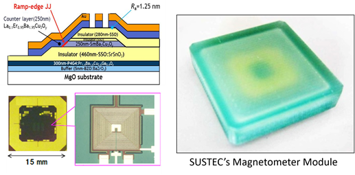
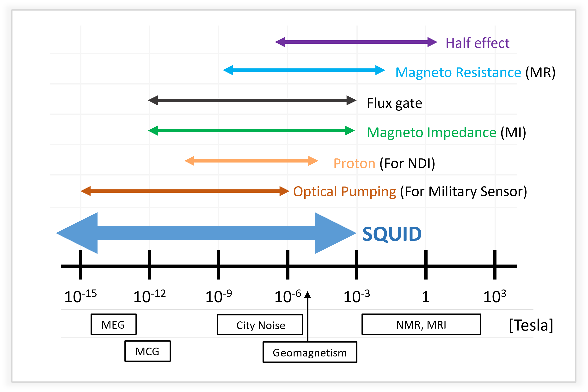
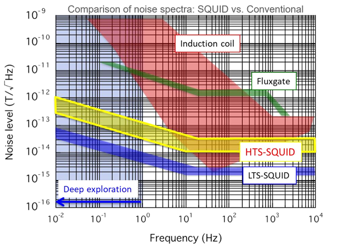
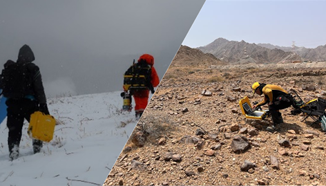

HTC-SQUID Magnetometer
High Temperature Superconducting Quantum Interference Device

7 patents for designing SQUID sensor device
- “Multilayer structure including two High Temperature Superconducting layers fabricated by patented process, which is so called Josephson Junction with "Ramp-edge" structure.
- This methodology is based on our unique semiconductor fabrication process developed by a long history of extensive work in the semiconductor industry even since 80-90th. Only-one fabrication technology in the world.

Super Sensitive SQUID Magnetometer
- Principle based on quantum physics.
- Ultimately high sensitivity to detect tiny signal such us MEG (Magnetoencephalography) level.
- Wide dynamic range even detectable up to geomagnetism.
- Small size / lower power required.

Lower field noise at lower signal frequencies
- SQUID possesses a great nature for “Unlock deep TEM exploration”
- Less independent on sensitivity against wide frequency band (DC up to MHz). “Great for EM data processing & analysis”
- Liquid N2 cooling for HTS-SQUID instead of liquid He. “Low cost, available anywhere, field friendly”
- Only a few companies in the world can use SQUID technology for geophysical exploration.
- x1000 better tolerance for external noise and x5 higher slew rate against competitors.
- Higher slew rate and noise tolerance enables more deeper / accurate geophysical exploration.
*Reference: Superconductor Science and Technology, 34, 033001 (2021), “Superconducting sensors and methods in geophysical applications”, R Stolz, M Schmelz, V Zakosarenko, C. Foley, K. Tanabe, X. Xie, and R. L. Fagaly

Proven SQUID Operation in Hostile Environment
- Rainforest and steep mountains area of Southeast Asia.
- Rugged desert areas in the Middle East.
- Deep snowing condition...
- Shallow water offshore environment in Japan (Hokkaido).